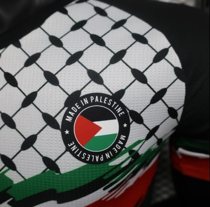

if you are looking for high-quality Palestinain jerseys for football national team or the bascketball team then you are in the right place! we have a wide variety of jerseys for both teams in different sizes and colors, so you can find the perfect one for you. our jerseys are made from high-quality materials that are comfortable to wear and durable, so you can enjoy them for a long time. whether you are a fan of football or basketball, we have the perfect jersey for you. shop now and show your support for the Palestinian national teams!
